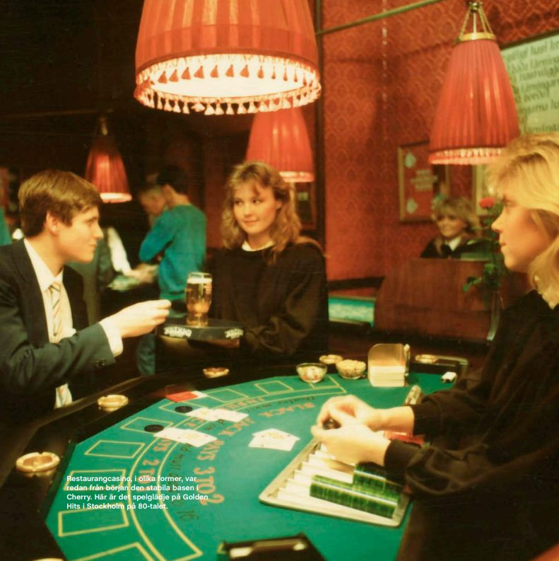

1963
Allt börjar här
Luciakvällen 1963 grundar Bill Lindwall och Rolf Lundström AB Restaurang Rouletter. Idén är ny för sin tid: ta casinokänslan ut till de svenska restaurangerna, främst i södra och mellersta Sverige, och låta gästerna möta spelet där kvällen ändå utspelar sig — vid bordet, på riktigt.